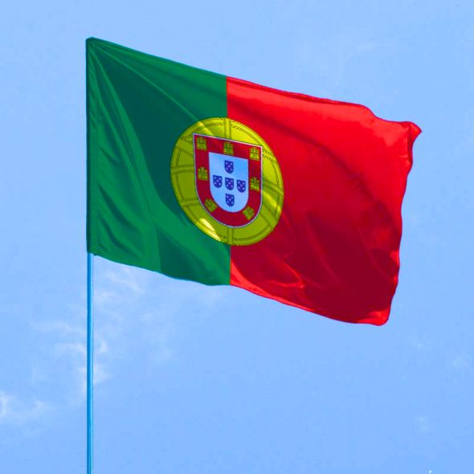

Про країну
Португалія найзахідніша континентальна країна Європи, розташована на Піренейському півострові, відома своїм м'яким субтропічним кліматом, багатою історією, океанічним побережжям та чудовою гастрономією.

Прапор Португалії
Португалія найзахідніша континентальна країна Європи, розташована на Піренейському півострові, відома своїм м'яким субтропічним кліматом, багатою історією, океанічним побережжям та чудовою гастрономією.

Прапор Португалії

Столиця та найбільше місто, що розташоване на холмах біля річки Тежу. Відоме історичними кварталами (Алфама), трамваями та яскравою архітектурою.

Друге за величиною місто, батьківщина портвейну, розташоване на півночі країни.

Південний регіон, відомий своїми піщаними пляжами, скелястими бухтами та ідеальними умовами для літнього відпочинку та гольфу.
Сінтра: місто-казка неподалік Лісабона, де розташовані вражаючі палаци та замки (наприклад, Національний палац Піна).

Долина річки Дору: відомий виноробний регіон з мальовничими террасами, включений до списку спадщини ЮНЕСКО.

Острів: автономні регіони Мадейра та Азори, що славляться унікальною природою, хайкінгом та океанськими пейзажами.